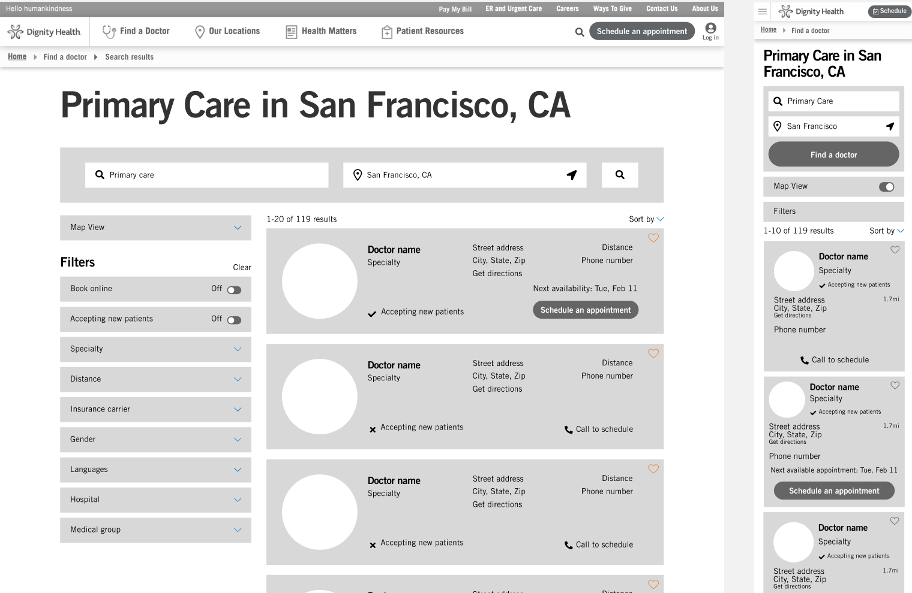
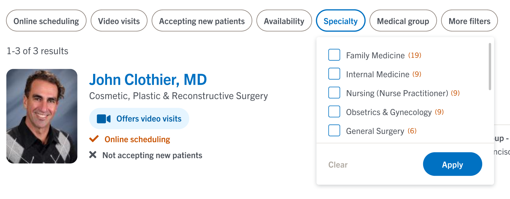

Overview
- Background: One of the highest priority initiatives for our product team this past year was Search and Schedule enhancements. As part of this initiative, I led a complete redesign of the Find a Doctor product, including information architecture research for the doctor profile pages, a visual reskin of the search landing page, and significant UX improvements to the doctor search results page.
One of the notable improvements was the work I did on the filter functionality, which was a big pain point for our users. - Duration: June 2020 - July 2020 (2 months)
- Status: Launched 🚀
- My Role: Product Designer (sole designer on project)
- Team: I collaborated with a cross-functional team of Product Managers, Technical Architects, Front-end Developers, Brand and Marketing teams, and Clinic Operations stakeholders.
- Activities: Ideation, Competitive Research, Wireframing, Prototyping, User Testing, Interface Design
- Tools:
 Figma
Figma Userzoom
Userzoom
01. Research + concept
Competitive analysis
As part of the competive analysis, I wanted to look beyond the typical healthcare systems to see what more could be done. I ended up bucketing competitors into 3 categories:
- Other healthcare systems, e.g. Kaiser Permanente, Sutter Health, Banner Health, etc.
- Modern healthcare tech companies, e.g. One Medical, ZocDoc
- Hospitality companies, e.g. Airbnb, Virgin America, Yelp
The concept of Search and Schedule is prevalent among many industries outside of healthcare, including hospitality, travel, and dining reservations. I wanted to see what could be learned from those industries. While they may not be direct competitors, consumers become used to a certain digital standard, and I wanted our product to meet those standards.
User research + feedback
We conducted several unmoderated Think-out-loud research studies of our Find a Doctor product in Userzoom, asking users to walk through the experience and highlight their pain points. We discovered that:
- Filters were hard to locate, especially on mobile responsive
- Users typically used one to two filters at the most
- Frustration with filters applying and reloading the screen before the users were done making their selections
Previous Find a Doctor experience
02. Sketching + wireframing
I put pen to paper for some inspiration, and then translated those sketches into Figma wireframes and a working prototype for an initial round of testing.
Preliminary sketches
Select wireframes
03. User testing
I tested my prototype with 15 users through Userzoom. Some helpful feedback that I received:
- "Filters are still hard to use especially when I scroll down through the search results. Then I have to scroll all the way back up to the Filter section"
- "There are too many filter options - it feels overwhelming"
I had initially intended to go with a left side bar menu for filters, which other healthcare systems also seemed to favor, but based on the user feedback, I decided to shfit the design approach to a more modernized pill button format, similar to patterns seen on Airbnb and Zocdoc.
04. High-fidelity mockups
Finalized filter design
Desktop close-up
The new filter design is modern and intuitive. On desktop, the filters are positioned at the top of the search results, where users know to look for them. The important filters are highlighted upfront, while lesser used filters are hidden in a 'More filters' modal.
Users have the ability to easily clear and apply filters, and we ensured that toggles, checkboxes, and radio boxes were used for appropriate selection types.
Mobile close-up
The experience transitions seamlessly to tablet and mobile responsive, where users interact with all filters in a full-screen modal.